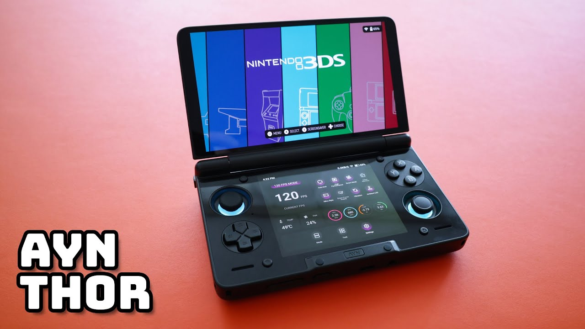
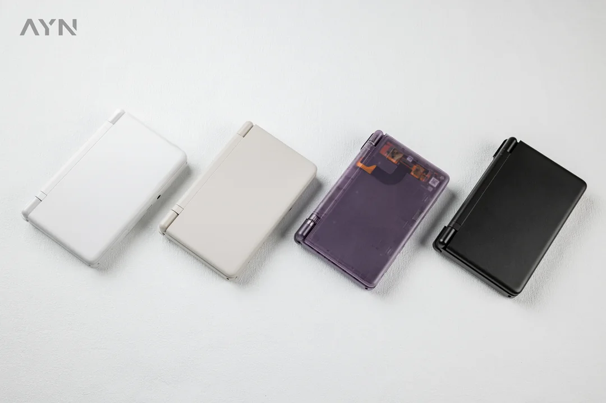

The Ayn Thor is available in four different variants, three of which are identical except for increasing amounts of onboard memory and RAM, while the fourth is the “Lite” version, featuring a different CPU. Regardless of which model you pick, you can expect a 6000mAh battery, drift-less Hall effect joysticks, active cooling, a DisplayPort for video out, and what blew me away, two beautiful AMOLED screens – the top being a 6-inch 1080×1920 screen at 120Hz and the bottom a 3.92-inch 1080×1240 at 60Hz. Every game, video, and webpage I viewed on the Thor looked amazing, as one would expect from such displays. Admittedly, I kept the top screen at a locked 60Hz refresh rate most of the time, in order to improve battery life, but a quick press of the Ayn button pulled up the custom Ayn settings menu, wherein I could toggle to 120Hz at any time.

The Base, Pro, and Max versions all feature the more powerful Qualcomm Snapdragon 8 Gen 2 CPU, Adreno 740 GPU, and DDR5 memory, while the Lite features a Snapdragon 865 CPU, Adreno 650 GPU, and DDR4 memory. The non-Lite options also feature additional improvements, including Wi-Fi and the ability to output 4K 60fps video. I opted for the Max version to future-proof my storage capability, though there is a Micro SD port for you to expand your storage regardless of model.

The pursuit of a solid dual-screen handheld has dogged the Android-based handheld community for a while now, and while not the first to reach that goal, the Ayn Thor defines the new standard going forward. With various price points available to pick from, the Thor is a great choice to stream your PC and console games on, get the most out of your play store favorites, and even play some of your Steam library natively on.
© 2026 CITC-1300-NO1 - Beginning HTML and CSS. All rights reserved.